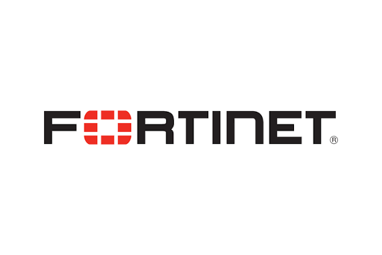

Fortinet Expert Partner11SI designs, deploys and operates the Fortinet Security Fabric - integrating networking, Zero Trust, SASE, endpoint, cloud and security operations into a unified platform that protects your enterprise from campus to cloud to OT.
11SI turns the Fortinet Security Fabric into an operational security programme - designing integrated architectures, delivering phased deployments and running 24x7 managed operations across every Fabric component.
Fortinet's Security Fabric integrates FortiGate, FortiAnalyzer, FortiManager, FortiSASE, FortiEDR and the full product portfolio into a single coordinated architecture - sharing threat intelligence, policy and telemetry across every security layer. 11SI designs Security Fabric architectures from the ground up, replacing fragmented point products with a unified platform that reduces operational complexity while expanding coverage.
FortiGate Secure SD-WAN converges networking and security into a single platform - replacing MPLS with intelligent WAN path selection while maintaining enterprise-grade threat prevention. 11SI delivers end-to-end SD-WAN transformation programmes, consolidating branch stacks and automating zero-touch provisioning at scale.
FortiSASE and Zero Trust Network Access replace legacy VPN with identity-verified, per-session application access - securing remote and hybrid users without backhauling traffic through headquarters. 11SI architects ZTNA and SASE deployments that extend existing FortiGate policy into the cloud with consistent enforcement.
The Security Fabric connects FortiGate, FortiSASE, FortiAnalyzer, FortiManager, FortiEDR, FortiNAC, FortiSIEM, FortiSOAR and the full Fortinet portfolio into a single integrated architecture - sharing threat intelligence, telemetry and policy enforcement across campus, branch, cloud, OT and remote users.
Security Platform
Enterprise & private data center protection
Secure campus and corporate networks
Consistent branch connectivity & security
AWS, Azure & GCP workload security
Secure SaaS applications and users
Protect edge locations and remote sites
Industrial control systems & operational technology
Hybrid work, cloud adoption and OT expansion have dissolved the enterprise perimeter. Security teams managing 45+ disconnected products cannot respond at the speed modern threats require.
Remote and hybrid users access corporate resources from unmanaged devices and networks - creating an access control problem that perimeter firewalls cannot solve.
Distributed branch offices with local internet breakout create inconsistent security posture that attackers actively target as a path into the corporate network.
AWS, Azure and GCP each operate independently - creating visibility gaps and inconsistent policy when managed with separate, cloud-native security tools.
Thousands of IoT devices and OT systems connect to corporate networks without consistent security controls, visibility or segmentation - expanding the attack surface invisibly.
Compromised credentials and stolen identities now underpin the majority of network breaches - bypassing perimeter controls that focus on IP addresses rather than user context.
Ransomware operators gain initial access through phishing, then move laterally through flat networks for weeks before deploying encryption - network segmentation is the primary countermeasure.
Legacy firewall architectures, MPLS dependencies and manually managed policies create operational burden that slows both security response and business network change.
Separate tools for NGFW, SD-WAN, SASE, EDR, SIEM and NAC produce siloed data - preventing the cross-domain correlation that effective threat detection requires.
PCI DSS, ISO 27001, DPDP, SEBI and sector-specific regulations demand demonstrable, auditable controls that fragmented tooling cannot consistently produce or evidence.
Security teams spending time on manual policy management, alert triage across disconnected consoles and vendor-by-vendor patching rather than responding to actual threats.
Encrypted traffic, east-west flows and cloud workloads create detection blind spots that adversaries exploit for reconnaissance and lateral movement undetected for weeks.
Sensitive data flows across branch networks, cloud storage and SaaS applications without consistent DLP enforcement - compliance exposure grows with every unmonitored path.
Seven integrated solution areas - from next-generation firewalls to cloud-native security and OT protection. Expand each to see what 11SI implements and operationalizes.
Application-aware threat prevention, SSL inspection and network segmentation across campus, data centre and branch - security embedded in the network infrastructure itself.
Application-aware inspection, IPS, SSL/TLS decryption, web filtering and antivirus delivered from a single security processing unit. 11SI designs FortiGate architectures for perimeter, internal segmentation and data centre environments - with high availability, policy governance and FortiGuard AI subscription management included.
Intelligent WAN path selection, application SLA enforcement, active-active failover and business continuity built into FortiGate - no separate SD-WAN overlay required. 11SI delivers end-to-end Secure SD-WAN transformation programmes replacing MPLS, consolidating branch stacks and zero-touch provisioning at scale.
East-west traffic inspection and micro-segmentation inside the data centre and campus network - containing lateral movement without redesigning the routing architecture. 11SI implements segmentation policy aligned to application tiers, regulatory requirements and zero-trust network access principles.
Cloud-delivered security for remote and hybrid users - Secure Web Gateway, ZTNA, CASB and FWaaS in a single service replacing legacy VPN.
Cloud-native SWG, CASB, ZTNA and FWaaS converged into a single service - delivering consistent security policy to every user regardless of location. 11SI architects FortiSASE deployments that extend existing FortiGate policy into the cloud, migrate legacy remote access infrastructure and integrate with existing identity providers.
Identity and device-verified application access that replaces implicit network-level trust with explicit, per-session authorisation. 11SI implements ZTNA with MFA enforcement, device posture checks and application segmentation - migrating VPN-dependent workflows to least-privilege application connectivity without disrupting user productivity.
Behavioural endpoint detection and response combined with unified endpoint management protecting every device across the enterprise.
Behavioural detection and automated response against ransomware, fileless attacks and advanced threats - with sub-second containment that stops attacks in progress without impacting device performance. 11SI deploys FortiEDR with custom detection policies, Fabric integration and 24x7 managed response included.
Centralized endpoint management delivering VPN, ZTNA, compliance enforcement and FortiEDR telemetry from a single console - 11SI configures EMS with device posture checks, compliance profiles and integration into the FortiSASE and FortiGate policy framework.
Centralized visibility, policy governance, threat detection and automated response across the entire Security Fabric.
Centralized log management, security analytics and compliance reporting across the Fabric - providing the forensic data and real-time correlation needed for effective threat investigation. 11SI deploys FortiAnalyzer with retention policies, custom reports and FortiSIEM integration.
Centralized policy management and device lifecycle governance across every FortiGate in the estate - enabling consistent policy deployment, zero-touch provisioning and change management at scale. 11SI implements FortiManager with RBAC, change approval workflows and automated compliance checks.
Security event correlation and incident detection across Fortinet and third-party data sources - providing the SOC with a unified operational picture. 11SI deploys FortiSIEM with custom correlation rules, UEBA policies and escalation workflows integrated into existing ITSM systems.
Security orchestration, automation and response with visual playbook design, case management and multi-tool integration. 11SI builds FortiSOAR playbook libraries covering triage, enrichment, containment and reporting - reducing analyst response time from hours to minutes through structured automation.
Cloud-native application protection and consistent security policy across AWS, Azure and GCP environments.
Cloud security posture management, workload protection and Kubernetes security converged - providing unified risk visibility across cloud environments. 11SI deploys FortiCNAPP to build a continuous cloud compliance baseline, detect misconfigurations and integrate cloud risk findings into the FortiAnalyzer and FortiSOAR workflow.
FortiGate-VM deployed in AWS, Azure and GCP providing consistent north-south and east-west security policy across cloud workloads - with FortiManager centralizing policy governance across both on-premises and cloud FortiGate instances. 11SI designs hybrid cloud security architectures that extend Fabric telemetry into every cloud environment.
Protecting industrial control systems, SCADA networks and operational technology environments without disrupting operations.
FortiGate-Rugged securing ICS and SCADA environments with deep packet inspection for industrial protocols - OPC, Modbus, DNP3 - providing visibility into industrial communication without impacting availability. 11SI deploys OT-aware security policies with prevention modes tuned for operational environments.
Passive discovery of industrial assets, PLCs, RTUs, HMIs and network devices - building a complete OT inventory without active scanning that could disrupt sensitive equipment. 11SI configures FortiNAC and FortiGate OT visibility to extend Security Fabric telemetry across the IT/OT boundary.
Network segmentation between IT and OT zones - preventing lateral movement from enterprise networks into operational environments. 11SI designs segmentation architectures aligned to the Purdue model and IEC 62443, enforced through FortiGate zone-based policies with audit logging for compliance evidence.
The connective layer transforming individual Fortinet products into a coordinated platform through shared telemetry, policy and automation.
FortiGuard AI threat intelligence distributed automatically across FortiGate, FortiEDR, FortiSIEM and all Fabric-connected products - a threat detected on the endpoint triggers updated policy on the firewall within seconds without manual intervention.
Pre-built integrations connecting Fortinet products to each other and to third-party platforms - cloud providers, identity systems, ticketing tools and third-party firewalls - enabling a shared security posture without custom integration development.
Security policy created once and enforced consistently across FortiGate, FortiSASE, FortiEDR and FortiNAC - eliminating the policy drift that occurs when each security layer is managed in a separate console with separate workflows.
Process-driven and repeatable so outcomes are predictable regardless of scale or complexity.
Architectural design, vulnerability assessment and real-world proof of concepts to identify security gaps and build a scalable Zero Trust foundation before deployment.
Deploy and integrate certified cybersecurity solutions including Zero Trust, SASE, SIEM, EDR and cloud security platforms, engineered specifically for your environment.
Provide 24x7 managed services with continuous monitoring, policy optimization, configuration management, platform health checks and compliance reporting.
Deliver managed detection and response with advanced analytics, threat intelligence and expert SOC operations for rapid threat containment and continuous protection.
Every engagement starts from a specific business problem. Here is how 11SI applies the Fortinet Security Fabric to the challenges enterprises face most.
Legacy firewall platforms - end-of-life ASAs, outdated Juniper SSGs - cannot inspect encrypted traffic, lack application-layer visibility and require manual policy management at unsustainable scale.
11SI migrates to FortiGate NGFW with full SSL inspection, application control, IPS and FortiGuard AI - running parallel environments during cutover to maintain availability.
Encrypted traffic now inspected, application-level policy enforced, management consolidated in FortiManager and operational overhead materially reduced.
MPLS costs growing with branch expansion, inconsistent branch security posture and separate WAN and security stacks that require independent management at every site.
11SI deploys FortiGate Secure SD-WAN replacing MPLS with dual-ISP broadband, consolidating the WAN router and security appliance into one device and provisioning branches with zero-touch deployment.
40% WAN cost reduction, consistent security policy across all branches and 60% faster new-site provisioning through FortiManager automation.
Remote employees access corporate applications through legacy VPN that backhauling traffic through HQ - creating a bottleneck and applying inconsistent security policy to cloud-bound traffic.
11SI deploys FortiSASE with ZTNA replacing VPN, SWG for direct internet access and CASB for SaaS visibility - extending the same FortiGate security policy to cloud-delivered enforcement.
VPN infrastructure decommissioned, application access performance improved, SaaS security posture established and 4,200 remote users brought under consistent policy enforcement.
Flat network architecture allowing unrestricted east-west traffic - ransomware encrypts hundreds of systems in hours because lateral movement between segments is unconstrained.
11SI implements FortiGate internal segmentation with zone-based policies, micro-segmentation for critical servers and FortiNAC automated isolation of compromised devices within seconds of detection.
Ransomware blast radius contained to a single segment, automated isolation response under 30 seconds and network segmentation aligned to regulatory requirements for data protection.
Industrial control systems and SCADA networks connected to corporate IT without segmentation - one compromised endpoint in the IT network can reach ICS systems directly.
11SI deploys FortiGate-Rugged at the IT/OT boundary with industrial protocols inspection, FortiNAC passive OT asset discovery and zone-based segmentation aligned to IEC 62443 and Purdue model architecture.
IT and OT networks segmented with full inspection at the boundary, OT asset inventory established for the first time and cross-boundary attack paths eliminated.
SOC analysts managing FortiGate alerts in FortiAnalyzer, endpoint events in a separate console and cloud alerts in a third - no correlation, slow investigation, high false positive rate.
11SI integrates FortiSIEM with FortiAnalyzer, FortiEDR and cloud connectors - building a unified security operations picture with FortiSOAR playbooks automating triage, enrichment and containment.
Mean time to detect reduced by 65%, analyst triage effort cut by 50% through FortiSOAR automation and cross-domain correlation surfacing attacks that individual tool alerts miss entirely.
Enterprise cloud workloads in AWS and Azure managed with native cloud security tools that are disconnected from on-premises FortiGate policy - inconsistent controls and no unified visibility.
11SI deploys FortiGate-VM in AWS and Azure VPCs managed through the same FortiManager instance as on-premises appliances - unified policy, consistent logging to FortiAnalyzer and FortiCNAPP for posture management.
Consistent security policy across on-premises and cloud, unified FortiAnalyzer visibility and cloud security posture management integrated into the existing security operations workflow.
PCI DSS, ISO 27001, DPDP and RBI requirements demand auditable network controls, log retention and evidence of continuous monitoring that manual processes cannot sustain at scale.
11SI configures FortiAnalyzer compliance reporting templates, FortiManager policy change tracking and FortiGate audit logging - producing automated compliance evidence aligned to each regulatory framework.
Automated compliance reporting replacing manual evidence collection, audit readiness maintained continuously rather than prepared periodically and regulatory evidence produced on demand.
Each industry brings a distinct compliance and risk profile our deployments are tuned accordingly.
Total active Fortinet platform footprint supported exceeds 200+ environments across internet security, application security and identity-driven access deployments.
The Fortinet Security Fabric is an integrated cybersecurity platform that connects FortiGate firewalls, FortiSASE, FortiEDR, FortiNAC, FortiAnalyzer, FortiManager, FortiSIEM and FortiSOAR - sharing threat intelligence, telemetry and policy across every security layer. Unlike a collection of separate products, the Fabric distributes FortiGuard AI threat intelligence automatically across all connected components and enables cross-product automation through Fabric connectors, so a threat detected at the endpoint triggers updated firewall policy without manual intervention.
FortiGate delivers purpose-built security processing through custom ASICs (SPUs), providing higher throughput and lower latency than software-based NGFW platforms at equivalent price points. The Security Fabric integration means FortiGate shares telemetry, policy and threat intelligence natively with FortiSASE, FortiEDR, FortiAnalyzer and every other Fabric component - eliminating the integration overhead required by multi-vendor architectures.
FortiSASE converges Secure Web Gateway, ZTNA, CASB, FWaaS and SD-WAN into a single cloud-delivered service managed from FortiManager. Unlike standalone SASE vendors, FortiSASE extends the same FortiGate security policy and FortiGuard AI threat intelligence into the cloud - so on-premises and remote users receive identical protection without duplicating policy management or requiring separate security consoles.
FortiEDR uses behavioural analysis rather than signature matching, detecting and containing fileless attacks, ransomware and advanced threats in real time. Sub-second automated containment stops attacks in progress without requiring SOC analyst intervention, while Fabric integration shares endpoint telemetry with FortiGate, FortiSIEM and FortiSOAR for cross-domain correlation and coordinated response.
FortiAnalyzer provides centralized log management, security analytics and compliance reporting across the entire Fortinet Security Fabric. It aggregates logs from all FortiGate firewalls, FortiSASE, FortiEDR and other Fabric components, enabling real-time security event correlation, forensic investigation and automated compliance evidence generation for regulatory frameworks including PCI DSS, ISO 27001 and DPDP.
FortiManager centralizes policy management, device configuration and lifecycle governance across the entire FortiGate estate. It enables consistent policy deployment, zero-touch provisioning of new devices, RBAC-controlled change management and configuration backup - ensuring every FortiGate in the network runs the same approved security policy and reducing configuration drift at scale.
Yes. Fortinet implements Zero Trust through ZTNA (identity and device-verified application access), FortiNAC (network access control with device profiling), FortiGate internal segmentation (micro-segmentation and zone-based policies) and FortiSASE (cloud-delivered ZTNA for remote users). Together, these components replace implicit network trust with explicit, per-session, context-aware authorisation across every access point.
Yes. 11SI delivers structured migration programmes from Cisco ASA, Palo Alto, Juniper, Check Point and other NGFW platforms to FortiGate - including policy translation, parallel running, phased cutover and post-migration validation. Our methodology ensures continuous security coverage throughout the transition with zero unplanned downtime.
Deployment timelines depend on scope: a single-site FortiGate NGFW deployment typically completes in 2-4 weeks, while a full Security Fabric programme spanning NGFW, SD-WAN, SASE, EDR, SIEM and SOC automation takes 3-6 months. 11SI runs phased deployments with defined milestones, and every implementation includes post-deployment managed services for ongoing optimization.
Yes. 11SI operates 24x7 managed services covering FortiGate, FortiSASE, FortiEDR, FortiAnalyzer, FortiSIEM and the full Security Fabric - including continuous monitoring, policy optimization, configuration management, health checks, compliance reporting and managed detection and response with SOC-led threat containment.
Yes. FortiGate-VM deploys natively in AWS, Azure and GCP, managed through the same FortiManager instance as on-premises appliances. FortiCNAPP provides cloud security posture management and workload protection, while FortiSASE secures cloud-bound user traffic. 11SI designs hybrid architectures that extend Fabric telemetry and consistent policy across every environment.
Fortinet's Security Fabric serves enterprises across all regulated sectors. Manufacturing and OT-dependent industries benefit from Fortinet's industrial security capabilities, financial services from its compliance and segmentation features, healthcare from its data protection controls, and IT/ITES from its SD-WAN and SASE offerings. 11SI has delivered Fortinet deployments across 200+ environments spanning finance, healthcare, manufacturing, media, aviation and more.